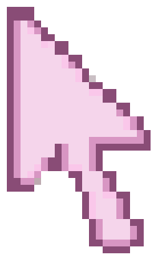

Veronica Pletsch
Presentations
Projects
UX & Product Design
Resume
Writing Samples
Contact
Desktop Home Preview
An experimental retro desktop version of Veronica Pletsch’s portfolio homepage.
New message available.
Projects
UX & Product Design
Writing Samples
Presentations
Resume
Home
Contact
Start
Veronica's Portfolio
